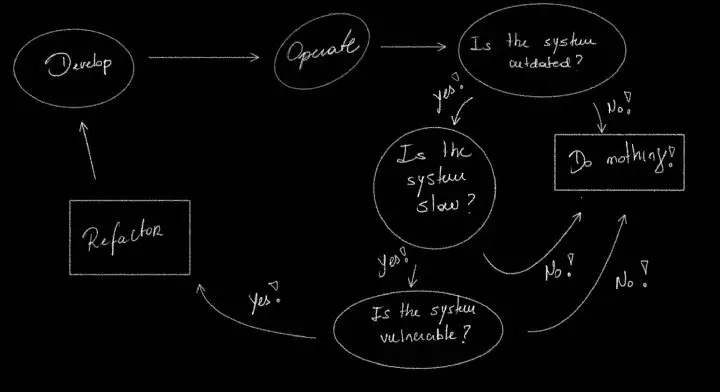
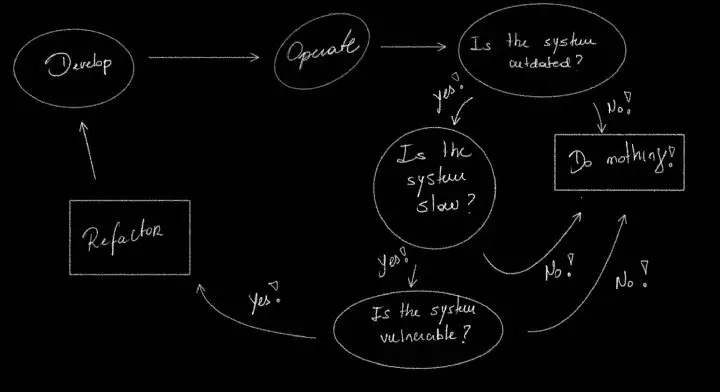

Most of the information contained here is based on studies on two articles that will be linked at the end.
Companies often think about updating their systems in 5–10 years in the future. Often modernization makes software more reliable to changes. It also can make it faster. However this comes with a cost. A time cost, which means: MONEY. Although modernization most of the times can’t represent, in a visual manner, business value. It is often related to under the hood improvements. This makes it a second, or even a third option when prioritizing money spending. It’s common to watch companies modernizing their infrastructure when they reach the limit of tech support. New feature are often implemented by sweeping the mess under the bed.

When thinking about software we can see it as a mutable organism. And normally business models and feature requirements drive architectural decisions. By doing so have much more influence in making mutations to the software. And today, more than ever, these business mutations are changing faster and faster to adapt to market changes. So, having a code structure easier to adapt to changes should be the main goal of any development team. But much more important is to understand the future of the business model it represents. This is key to be prepared for any changes that may come to the software/architecture. The development team and business team have to work together to have a seamlessly understand about each every problem and work in a solution faster, extensible and reliable. This will decrease the cost of a refactor and therefore represents more money to the organization. This is a difficult task to achieve.
Normally intuitive factors show as metrics for a code base that does not represent the business model. These factor show as the IT and the business team start lost their sync.
Which one will be more costly: refactor a code which represents a feature of 1% revenue, or modernizing a code that can bring more customers to the platform?
Modern organizations balance delivers between velocity and quality. Tech-debts grows most of the times unconsciously and not noticed by the development team. However address them regularly is one of the roles of the developers. It’s always important to negotiate paying them with the business team. It’s also important to keep this in their minds. As state before an agile and adaptive organization is the one which is prepared to be implementing changes. These changes need to be also align with their business vision. It’s a two way street. Neither we can have a business team asking for new features without adapting the legacy code, neither we can have an IT that is only about keep the “house clean”. Legacy code, most of the times, will live alongside with new code. How we move from legacy to a structured and extensible code is the main question. This is why a continuously analysis about how the code represents the business value is key. A well integrate team will generate a good understand about the business and, therefore, a good integrated code.
Modernize your infrastructure is not an IT problem. The problem with legacy code is not purely technical. By having a team that understand the future of an organization and see roadmaps being developed, an organization is doing the first step to a great IT-business collaboration.
References
http://jonnyleroy.com/2011/02/03/dealing-with-creaky-legacy-platforms/
https://martinfowler.com/bliki/ConwaysLaw.html
Companies often think about updating their systems in 5–10 years in the future. Often modernization makes software more reliable to changes. It also can make it faster. However this comes with a cost. A time cost, which means: MONEY. Although modernization most of the times can’t represent, in a visual manner, business value. It is often related to under the hood improvements. This makes it a second, or even a third option when prioritizing money spending. It’s common to watch companies modernizing their infrastructure when they reach the limit of tech support. New feature are often implemented by sweeping the mess under the bed.

When thinking about software we can see it as a mutable organism. And normally business models and feature requirements drive architectural decisions. By doing so have much more influence in making mutations to the software. And today, more than ever, these business mutations are changing faster and faster to adapt to market changes. So, having a code structure easier to adapt to changes should be the main goal of any development team. But much more important is to understand the future of the business model it represents. This is key to be prepared for any changes that may come to the software/architecture. The development team and business team have to work together to have a seamlessly understand about each every problem and work in a solution faster, extensible and reliable. This will decrease the cost of a refactor and therefore represents more money to the organization. This is a difficult task to achieve.
Normally intuitive factors show as metrics for a code base that does not represent the business model. These factor show as the IT and the business team start lost their sync.
- Engineers hate it to develop.
- Add new feature is costly.
- Confusion between integrations teams.
- Number of bugs.
- Huge backlogs.
- And so on.
Which one will be more costly: refactor a code which represents a feature of 1% revenue, or modernizing a code that can bring more customers to the platform?
Modern organizations balance delivers between velocity and quality. Tech-debts grows most of the times unconsciously and not noticed by the development team. However address them regularly is one of the roles of the developers. It’s always important to negotiate paying them with the business team. It’s also important to keep this in their minds. As state before an agile and adaptive organization is the one which is prepared to be implementing changes. These changes need to be also align with their business vision. It’s a two way street. Neither we can have a business team asking for new features without adapting the legacy code, neither we can have an IT that is only about keep the “house clean”. Legacy code, most of the times, will live alongside with new code. How we move from legacy to a structured and extensible code is the main question. This is why a continuously analysis about how the code represents the business value is key. A well integrate team will generate a good understand about the business and, therefore, a good integrated code.
Modernize your infrastructure is not an IT problem. The problem with legacy code is not purely technical. By having a team that understand the future of an organization and see roadmaps being developed, an organization is doing the first step to a great IT-business collaboration.
References
http://jonnyleroy.com/2011/02/03/dealing-with-creaky-legacy-platforms/
https://martinfowler.com/bliki/ConwaysLaw.html